In recent times, Japan has been witnessing a strong interest in every kind of strange phenomena, concerning spirits and monsters. We could call it a true “revival” of forgotten beliefs often vigorously outgrown by the modernization of the country in the past. The supernatural had been eradicated by providing rational explanations. According to Komatsu Kazuhiko—folklorist and cultural anthropologist—this kind of thinking was shared by many of the era’s elite, who promoted a European model of cultural enlightenment. (Kazuhiko) From this point of view, even though many may reject this way of thinking, people have always tried to figure out what was behind those situations which are simply hard to believe.
- Spiritism and Strange phenomena
- What are Yōkai? History and origins of Japanese monsters
- Tengu: Demons and Harbinger of Misfortune
- Kappa: Water Leprechauns of Japan
- Oni: Orcs and Ogres of Japanese Folklore
- Kitsune: Shapeshifters and tricky spirits.
- Tanuki: Amusing raccoon dogs in Japanese folktales
- Monsters and their depictions in Japan’s Media Culture
Spiritism and Strange phenomena
The representation of spirits is undoubtedly rooted in contemporary Japanese culture. This comes to light in one singular contradiction. On the one hand, many Japanese people consider their country as a concrete place; on the other a mysterious realm inhabited by presences. In a nutshell, an invisible dimension that even contributed in shaping the representation of Japanese cultural identity: the idea that spirits linger around us, and at least in some cases can affect our lives, is of course not new and far from superficial. (Rambelli p.3). Considering that Japan is not only a country known for its technological and social development but rather deeply entrenched in an animistic point of view.
It is obvious that in Japan the term animism is intertwined with various representations and practices. Mainly beliefs originated from ideas of a lively nature, populated by different types of “spirits” which are often not clearly distinguished from gods 神(kami), ancestors 先祖 (senzo), ghosts 幽霊 (yurei) and monsters 化物語 (bakemono). These entities are believed to reside in all things, including natural phenomena and objects.
What are Yōkai? History and origins of Japanese monsters
Yōkai are a class of supernatural entities and spirits in Japanese folklore. Generally speaking, the meaning is strictly related to creatures, presences, or “strange and eerie phenomena” that often may elude our perception. Regarding the origin of this word, the term yokai began to be common only during the Meiji period ( 1868-1912 ), even if an earlier usage was confirmed, since the Chinese characters 妖怪, (yāoguài), can be found in the Hanshu ( Book of Han I century BC ). Yaoguai were considered monsters that dwelled in the imperial palace. Instead, the first mention of Yokai in Japan appeared in the 日本書紀 Nihon Shoki (797 A.c.), always describing monsters at court.

Speaking of the kanji that compose it, Yōkai 妖怪 stands for “attractive, calamity” or “apparition, suspicious”. It refers to “mysterious phenomena” or “strange entities”. Hear a strange sound inside your house? Yōkai. A family member makes a strange face or acts oddly? Yōkai . Even though, in most cases, people nowadays realize what they define as an eerie presence is none other than the result of mishearing or misunderstanding. But why are Yōkai so popular today? First of all this soaring interest lies in a cross-medial culture that expresses itself through manga, anime, video games, literature, cinema, visual arts, and so on. Let us think about animated movies such as Spirited Away, My Neighbor Totoro and Mononoko Hime by Hayao Miyazaki or Pom Poko and The Tale of the Princess Kaguya by director Isao Takahata.
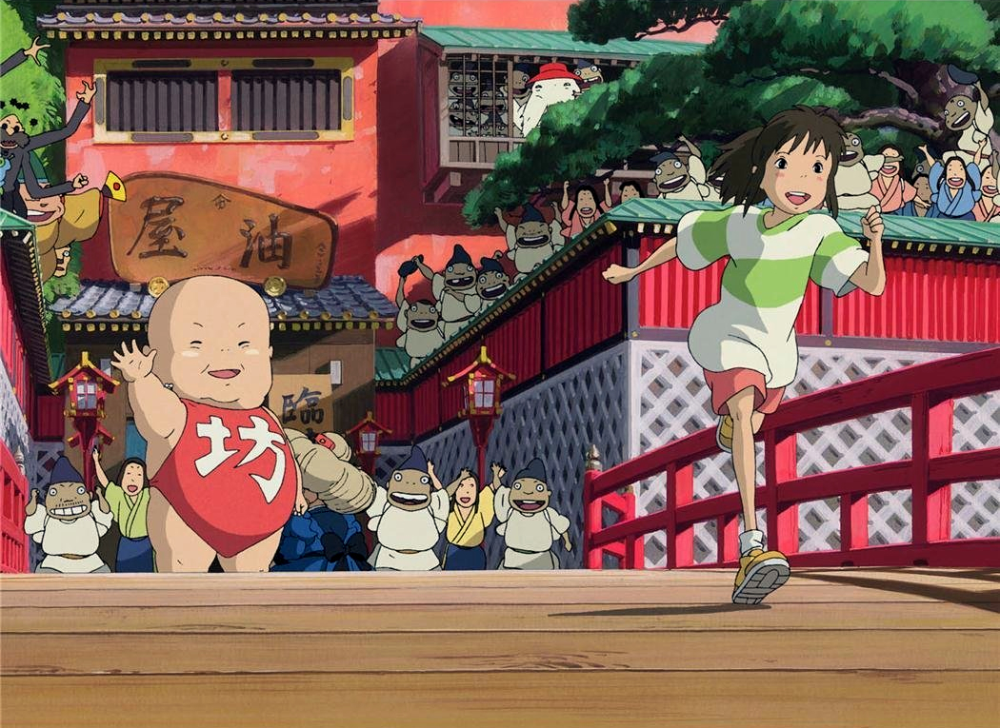
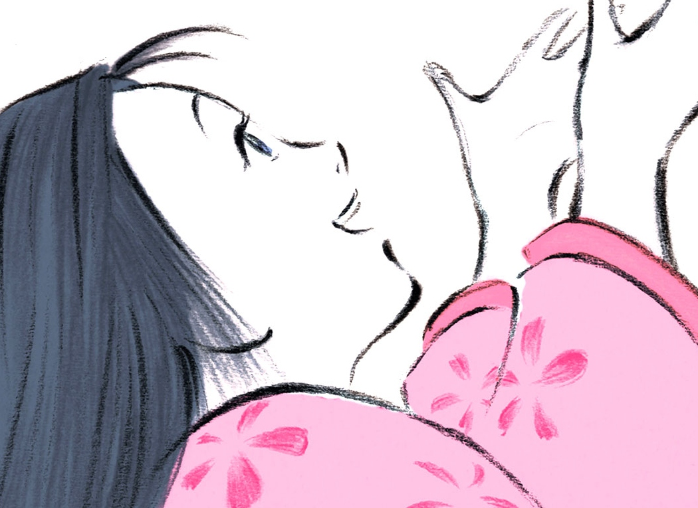
At the same time, this ferment relies on a folkloric culture that keeps nurturing Japan from the old days, a sort of nostalgic tension regarding occultism and an attraction for a “world beyond”. To better understand this broadest definition we could summarize and divide the term’s meaning into three categories as explained by Komatsu Kazuhiko: Yōkai as Incidents, Yōkai as Supernatural entities, and Yōkai as Depictions. In the first category, the author refers to presences that arise from fear, awe or wonder. Primarily experiences that stimulate the imagination. Peculiar is the phenomenon called furusoma (old timber) (kanji) or tengu-daoshi (tengu felling) that refers to a particular tale: A villager goes into the mountains to work—to make charcoal. He spends the night in a hut. In the middle of the night, he hears strange, rhythmic sounds with the babbling of the nearby river. The next morning, he investigates the area he heard the sound coming from, but can’t find anything that might have caused it. The locals call this azuki arai (bean washer), because bean-washing produces a similar sound (kazuhiko p.13).
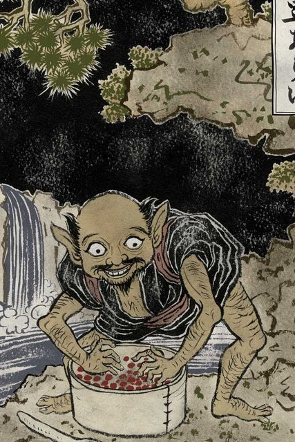
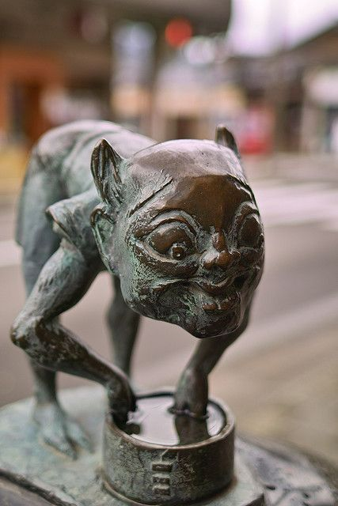
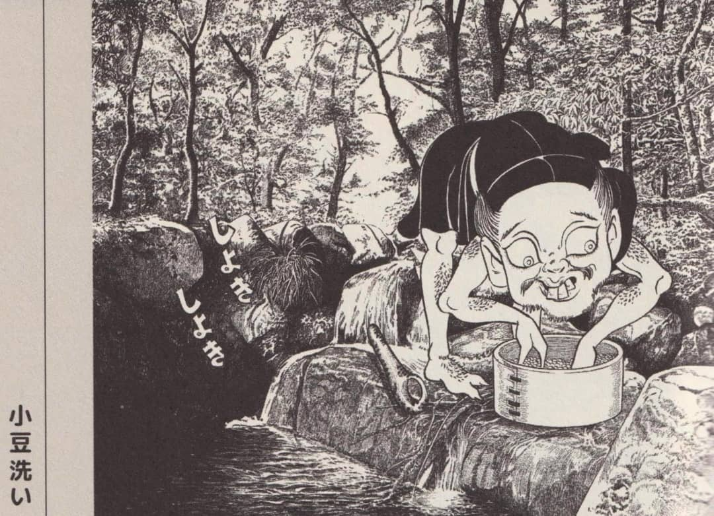
This short story may be associated with the attempt to explain why certain events occur. Instead, the second category refers not to phenomena itself but rather than mysterious presences that cause it. In this case, entities identified as monsters or ghosts. In the end, the third domain involves mainly depictions. Throughout the medieval period, Kyoto gave home to countless aristocrats, monks, merchants, and other residents. These circumstances cleared the way for a horizontal system of painted handscrolls that dates back to the Nara period, ( 710-794 CE ) known as 絵巻物 emakimono, developed and used to tell famous stories as well as tales of miracles.
As we enter the Muromachi period ( 1336-1573 ) these illustrations draw attention not only among aristocrats. Many scrolls depicted even common folks confronting and defeating yōkai. Even if artists must have feared these creatures, their steady representations through emaki became a disruptive development in Japanese folklore culture: the image of “yōkai as entities” they created became fixed, turning them even more fully into objects of entertainment. In this context, one depiction deserves special attention. As we mentioned before, picture scrolls began to portray eerie-looking creatures. Among oni, tengu, kappa, kitsune and tanuki. Tsukumogami 付喪神 were noteworthy.

This concerned human tools becoming yōkai: objects with added eyes, noses, hands, and legs. When tools reached ninety-nine years of age they usually became spirits. This is based on the belief that objects were indeed alive. Whoever tossed them away, in this case, their owners, had to wait for their vengeance. Tsukumogami unique personalities guaranteed hereafter an explosion in the variety of yokai as well as a series of books released in the late eighteenth century called Gazu hyakki yagyō 画図百鬼夜行 ( An Illustrated Catalog of the Demon’s Night Parade). Today those images depicted in the catalogue come alive through street festivals, like the Obon, a Buddhist holiday when the spirits of the dead are believed to visit the home of their living families. As we have seen, little by little, these creatures began to take part in Japan’s everyday life, tradition, and culture, showing themselves in different backgrounds. Now we will analyze some of them in detail.
Tengu: Demons and Harbinger of Misfortune
Often seen as dreadful wingy creatures, Tengu 天狗 (Celestial Dog) are considered a type of Yōkai. Originally depicted as birds of prey, they gradually took human form and avian features. The first appearance of the word tengu dates back to the Chronicles of Japan (Nihonshoki), as it is explained by Kazuhiko: In an entry for the year 637 during the reign of Emperor Jomei, a shooting star appears in the skies over the capital, streaking off and disappearing to the west accompanied by the sound of thunder. The people take this to be a harbinger of misfortune, but a monk who has just returned from a journey to China declares, “That was not a shooting star but a tengu”.
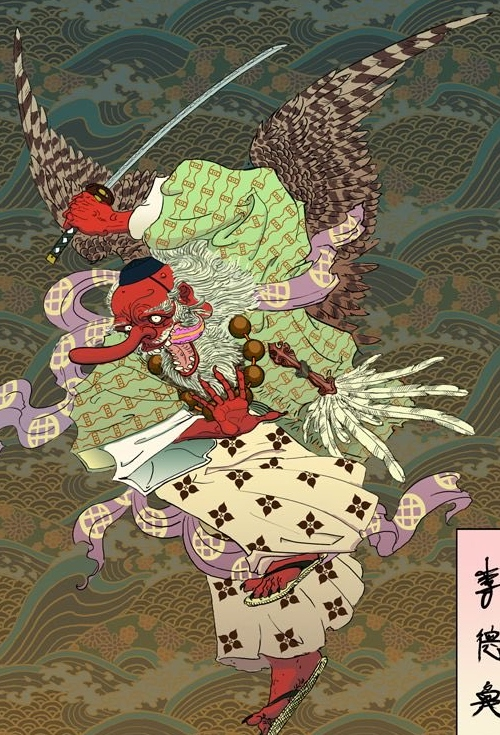
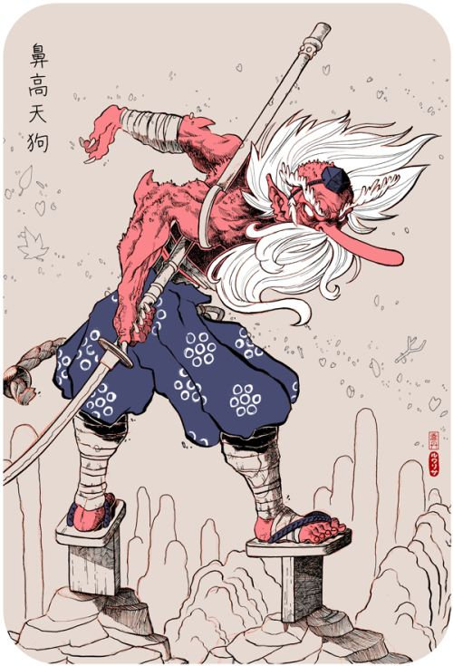
Among the several incorporations of this entity through the centuries, we can notice contradictory depictions: a being constantly in a precarious balance between goodwill and cruelty, a guardian of arcane mysteries, or a swindler. But what do tengu look like? Where do they live? Their appearance is usually associated with the environment where they appear: wild woods and peaks of mountains. Tengu have human-like bodies and limbs and are at times covered with feathers, long claws, large wings, and beaks. This is the oldest portrait of the Yokai known as karasu tengu (tengu-raven) or shotengu (small tengu). Over time it takes shape a more anthropomorphic depiction of this creature, always winged but with a human-like head. The most unusual trait is its face: red with a remarkable nose. Even its garment is curious. Tengu wore yamabushi dresses, referring to the traditional ascetic-monk who lives deep in the mountains. Nowadays this is the most common representation of the yokai.
Kappa: Water Leprechauns of Japan
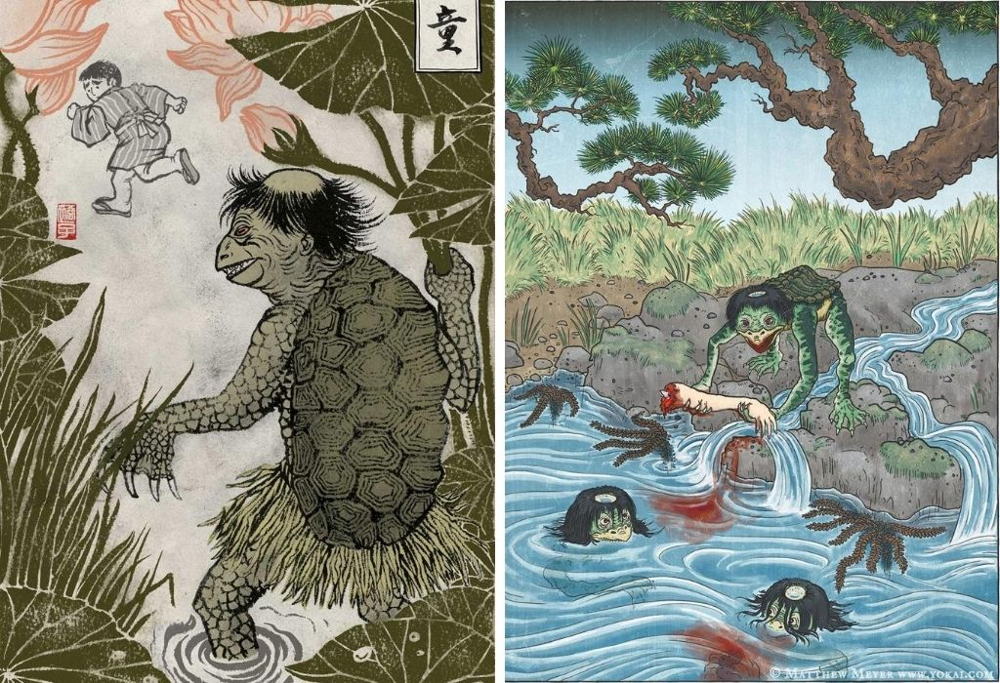
This is one of the most deeply-rooted creatures of Japanese cultural history. Once widely feared, nowadays, their grotesque features became associated with a certain humor. Kappa 河童 are typically depicted as green child-sized humanoids with webbed hands, a turtle shell on their back and a dish-shaped head (sara) where they gather water. They usually appear around bodies of water, river banks, moats, and ponds from which they emerge to do strange things to humans and cattle. That is why it is common to associate horses drowning with this creature’s actions. Besides, kappa loves engaging in sumo fights with humans. It is indeed an ambiguous being often seen as evil and mischievous. Other than dragging animals and humans underwater, kappa particularly loves, as it is told in old country-side tales, swallowing up the guts of its victims through their anuses. Often the outcome of its actions turns out to be ruinous, simply because the creature gets caught and mutilated. To get its limbs back it is forced to establish a pact with its captors, by revealing its hidden goodwill and secret recipes for bone diseases or by providing fish to the villagers. Regarding its origin, the Nihonshoki tells about an episode that dates back to the IV century A.c. concerning a mizuchi, a river monster who was spitting venom onto villagers. In this case, we can notice several affinities with kami who dwell next to the water. Many scholars supposed that kappa, just like other yokai, were in truth downgraded aquatic deities. In contemporary Japan, this creature turns in the end into a friendly icon, a key player in various contexts such as anime and manga.
Oni: Orcs and Ogres of Japanese Folklore
An Oni 鬼 is a creature known for its fierce and evil nature in Japan. According to the Iwanami kokugo jiten (Iwanami Dictionary of Japanese): Oni are humanoid creatures, with horns and fangs, and clad only in a pelt loincloth. Feared for their strength, fearlessness, and ruthlessness. Generally, their appearance is connected to iconography. Illustrations of oni are commonly found in books and comics today, featuring muscular creatures with ugly faces. Their body can be vividly colored, usually in red, blue, yellow, or black. Besides, oni are generally recognized by the presence of horns on their head. Making their dens in remote places outside our realm, they usually visit us every year on the night of setsubun 節分, a festival aimed at celebrating the end of winter and the beginning of the new year. This visit has a unique purpose: to devour people or steal their wealth.
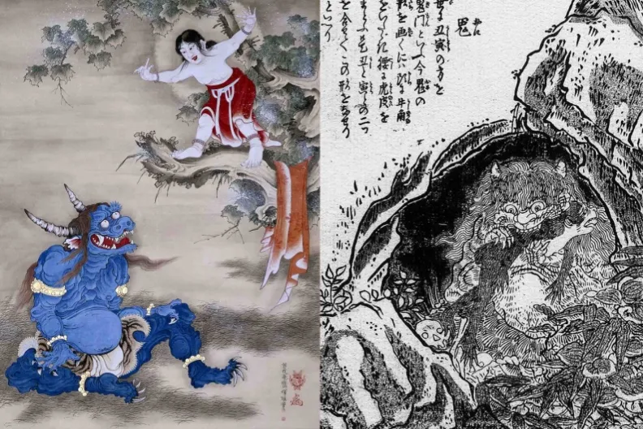
Oni are often seen as horned and scary presences. As mentioned by Kazuhiko: They are sometimes deployed regarding real people or events, but mainly as metaphors. For example, a parent who has murdered their child, or someone who has committed a cruel murder, might be called satsujinki (murderous oni). This sometimes links the word oni to any kind of antisocial, perverse, and violent behavior. In recent times the creature lost its original wickedness, taking on a more protective function. This can be seen in the onigawara, oni-faced roof tiles whose purpose is to ward off bad luck.
Kitsune: Shapeshifters and tricky spirits.
In Japanese folklore, Kitsune 狐 are foxes able to shapeshift into human form. This skill is often used to trick others, even though several tales portray them as faithful guardians and lovers. Because foxes and humans have been living close together since old times, this yokai gained a remarkable relevance, so much so becoming closely associated with a Shinto kami known as Inari. This creature was already mentioned in ancient Chinese folktales such as the Classic of Mountains and Seas and was depicted as a nine-tail fox, called huli jing.
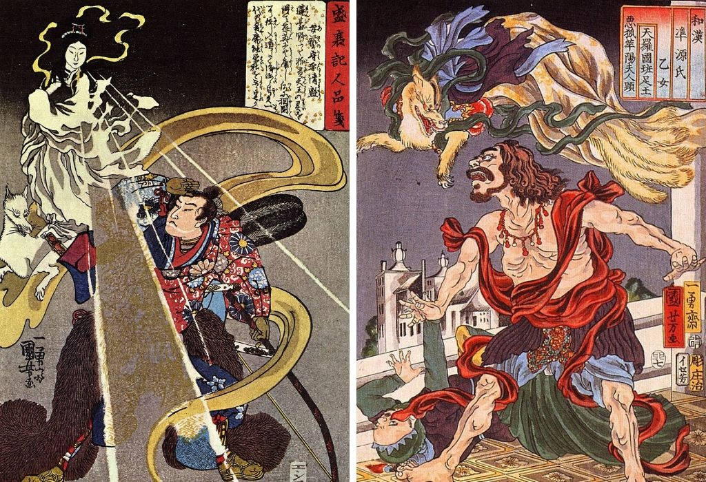
According to Nihon Shoki, foxes were supernatural beings whose aim was to reveal either good or bad omens. We can mainly identify two common classifications of spirit foxes: there are zenko, (good foxes), benevolent and celestial beings associated with the goddess Inari; and yako, on the contrary, malicious and mischievous creatures. It is said that the more tails a kitsune has, the older, wiser, and more powerful it is. When this spirit reaches 1000 years of age, it gains its ninth tail becoming the golden-colored tenko, the most powerful form of this yokai. Regarding its shape-shifting skills, common forms assumed by kitsune include beautiful women and young girls. A common belief in Medieval Japan was that any woman encountered alone, especially at dusk or night, could be a kitsune. Nowadays it is pretty common to see fox statues at the entrance of major Shinto shrines. Kitsune sculptures vary by design and materials. They are usually made from stone or wood and are often seen holding a ball or a key in their mouths. These can be considered symbols of prosperity and fertility for whoever approaches them.
Tanuki: Amusing raccoon dogs in Japanese folktales
Tanuki 狸 can be considered masters of disguise. Indeed they share several abilities with kitsune, speaking of their shape-shifting skills. This legendary creature is believed to be, on the one hand, playful and joyous; on the other hand mischievous, gullible and absent-minded. Tanuki resembles the shape of a raccoon dog, an east asian canine similar to badgers. Among its attributes the most intriguing are their testicles, generally used for any need. They can turn it into weapons, fans to keep cool, drums and even umbrellas. Even a famous nursery rhyme learned by children talks about this pleasant feature: Tan tan tanuki no kintama wa, Kaze mo nai no ni, Bura Bura. (Tan, tan tanuki’s ball, Even when there is no wind, They swing, they swing).
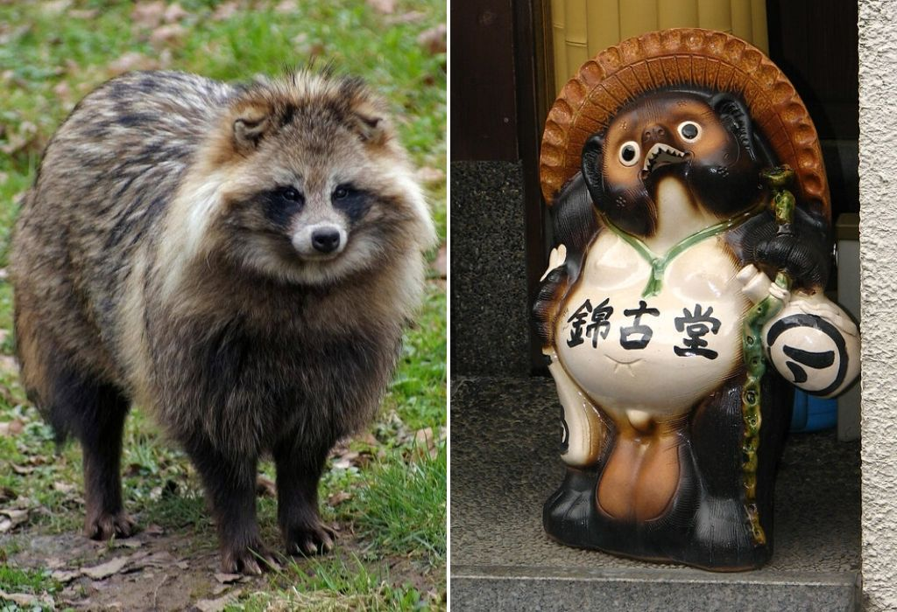
Also, an amusing depiction of this talent can be found in Pom Poko, the masterpiece of the japanese director Isaho Takahata. Concerning an environmental allegory, this 1994 animated fantasy film features tanuki. The phrase “Pom Poko” is an onomatopoeia, referring to the tanuki drumming their bellies. Prominent scrotums are shown, referred to throughout the film and used frequently for their shape-shifting. In the ancient religions of Japan, tanuki were worshipped and considered gods and rulers of all things in nature. With the spread of Buddhism, they gradually lost their status, becoming simple messengers of the gods and guardians of local areas. Another fascinating trait is that they take pleasure in imitating human activities such as drinking, gambling, and in taking part in buddhist rituals. Some of them go through their whole lives living among humans without ever being detected. As it seems, they particularly enjoy playing pranks, but they should not be underestimated because they can be dangerous at times. Some locals tell of horrible tanuki who snatch humans to eat them, or even spirit them away to become servants of the gods. In the end, today Tanuki turned into symbols of good fortune, especially for businesses. It is pretty common to see them at the doors of shops and restaurants.
Monsters and their depictions in Japan’s Media Culture
Recently, as we have already pointed out, Japan has been living a true renaissance of forgotten beliefs. For instance, we might take into account the steady production of various books, manga, animated movies, toys and video games regarding monsters and mysterious phenomena. Extraordinary, in terms of eccentricity, is the work of Shigeru Mizuki (1922-2015), one of Japan's most respected artists.
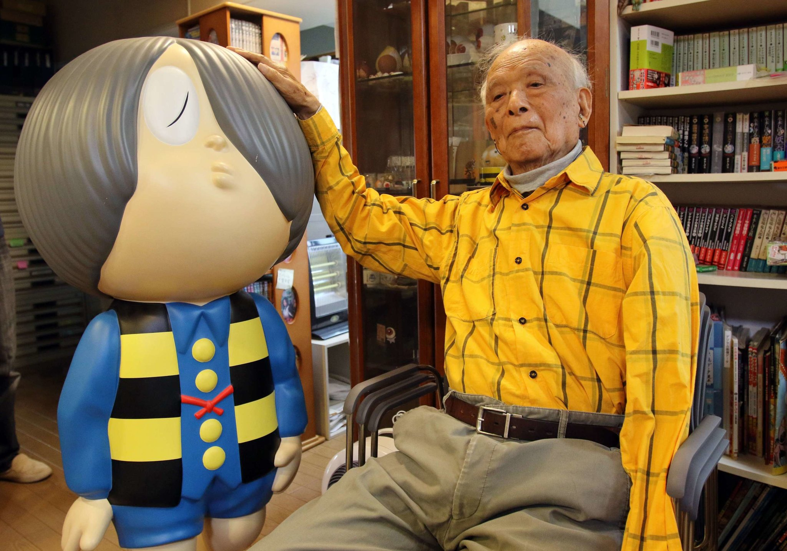
Remarkable is his effort in creating the yōkai genre with Gegege no Kitaro and even more interesting is the reason why he started painting these creatures: During the second World War, while he was catching up in a ferocious fight on an island in the Pacific, he was forced to flee into the jungle. One night, as he walked in the darkness, he suddenly found himself unable to move forward. He felt as if there was a yokai standing in his way, a yokai like a wall. So he stopped walking and laid down for the night. When he woke up in the morning, he found that he was just one step from the edge of a cliff. Mizuki believes that the yōkai had saved his life.
Speaking of Gegege no Kitaro, the Japanese manga created in 1960 focuses on the young Kitaro, the last survivor of the Ghost tribe, and tells about his adventures with strange creatures of Japanese Mythology. Many storylines involve Kitaro facing off with myriad monsters from other countries, such as the Chinese vampire Yasha, the Transylvanian Dracula IV, and other such non-Japanese creations. But mostly, as we could imagine, Kitaro locks horns with various evil yokai, who threaten the balance between Japanese creatures and humans. Mizuki has drawn over two thousand yōkai in his career, and most of them can be traced to real yokai traditions.
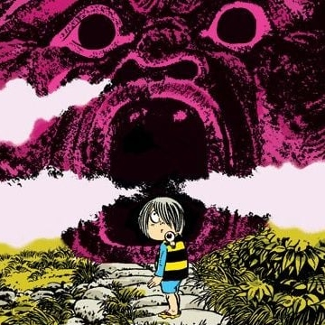
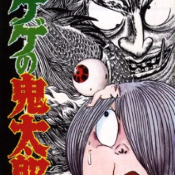
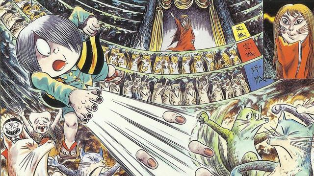
Another example of the Yōkai craze is the Japanese mixed-media franchise called Yo-kai watch. Started as a video game in 2013, Yo-kai watch revolves around befriending Yokai that are haunting the city. If someone manages to socialise with a yokai they will get a friendship medal, used to summon afterward the creature. Yo-kai watch spread from the game into manga, anime, toys and more. The franchise’s popularity is massive. Manufacturers can’t keep up with demand and often Yo-kai watch merchandise is sold out.
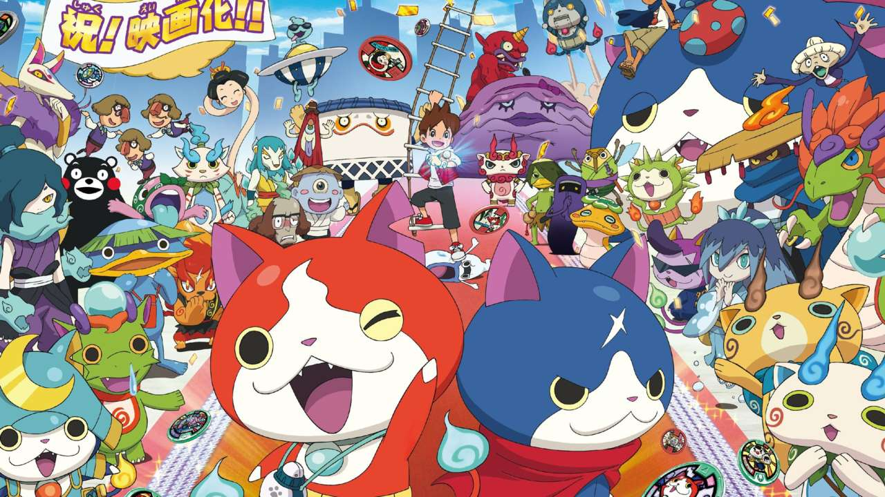
Speaking of my personal experience, I found particularly engaging a video game that strongly refers to yōkai and strange events called Ghostwire Tokyo. This video game developed by Tango gameworks and published by Bethesda, has stepped entirely in Japanese culture. The game’s setting is explicitly located in a Tokyo populated by spectral presences. The protagonist, Akito Izuki, wakes up in an empty city but not uninhabited. Tokyo is actually humming with all kinds of activity. Even though the city’s human population has disappeared, leaving behind piles of rumpled clothes, an otherworldly fog absorbed their corporeal bodies turning them into ghosts and creatures of Japanese folklore.
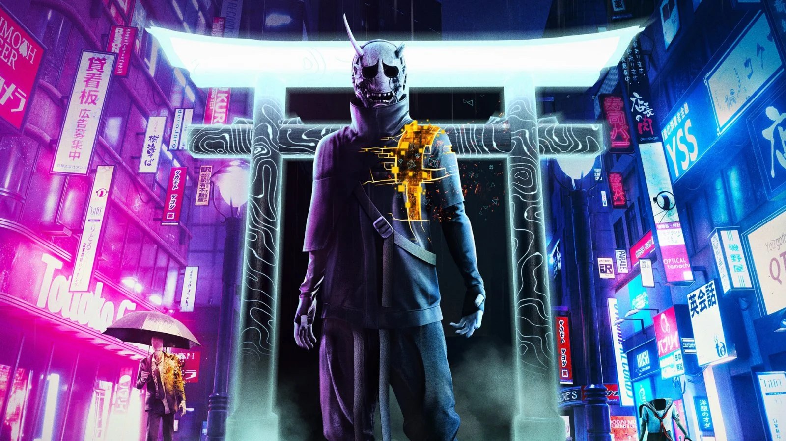
Ghostwire director Kenji Kimura explains how the game was born from the desire to bring Tokyo’s unique urban character to global audiences. The game’s producer Masato Kimura said that Tango gamework’s creativity was fueled by walking around Tokyo, imagining places where spirits could be hiding, “a process that allowed us to populate the city with the different kind of yokai that we have in the game”. In conclusion, it is unquestionable that Yōkai have played a crucial role in Japan, giving their contribution in shaping the fabulous narrations of Japanese people towards any kind of eerie and scary presence.